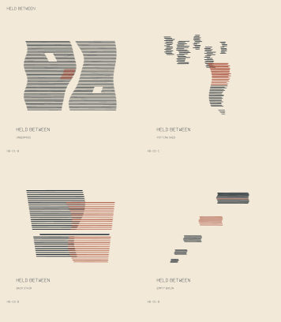

Four fictional listening cards, selected after comparing 18 generated candidates. This page is an edition index; candidate IDs are printed beneath the cards only on the overview. The individual SVGs contain the approved title and session label.
Open the selected overview SVG · Reproduction and selection notes

| Candidate / file | Session | Spacing | Seed |
|---|---|---|---|
| HB-01-b.svg | Underpass | 1.00 | 7473 |
| HB-02-c.svg | Potting shed | 1.14 | 7646 |
| HB-03-b.svg | Back stair | 1.00 | 7819 |
| HB-05-b.svg | Empty basin | 1.00 | 8165 |
The family holds mark thickness, slanted ends, palette, type and card geometry steady. The recipes change how marks gather, cross, interrupt and leave room. Duration is retained as source context; no axis or position claims to measure time or sound.
Exploration: compressed / a · held / b · expanded / c. Each sheet uses the same 160 mm card scale and all six records. The manifest links IDs to records, parameters, seeds, hashes and files.
Inspection used local librsvg/Cairo renders. Screenshots do not certify physical size, paper, ink color, or a print shop's renderer. The SVG masters use only vector geometry and a custom path alphabet; no font files, image assets or network resources are required.